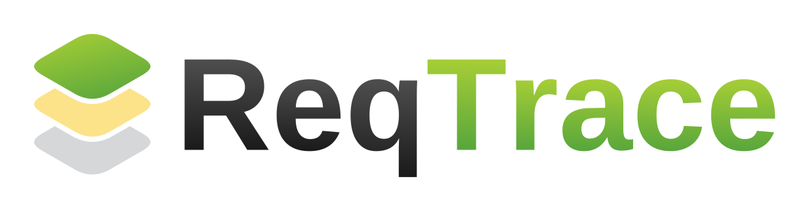

Инструмент, который держит связь «требование ↔ тест» живой
и сам замечает, когда она устаревает
Классика из учебника — но в Agile её поддержка дороже пользы: умирает через два спринта
Требуют участия разработки или аналитиков — для реалий проекта непозволительная роскошь
Они переживают правки, переезжают вместе со строками ТЗ и живут ровно столько, сколько нужны. Положи тест «в комментарий» к строке требования — и связь становится точной и живой.
Так появился ReqTrace — без помощи других команд.
Привязка закреплена за местом в тексте и переезжает вместе с ним при правках — как inline-комментарий
Статусы меняют только плановый прогон и вы: никакой магии, «подтвердить» — всегда осознанное действие
Личные креды Confluence, Jira — только чтение названий. Ни разработка, ни аналитики не нужны
Прогон в 03:00 перечитывает все страницы и переносит привязки; нет VPN — доберёт, когда связь появится
«Изменились 2 страницы, 3 привязки на проверку, затронуты SI-…». Или строка тишины: «изменений нет — проверено в 03:02»
Пословно: удалённое зачёркнуто, добавленное подсвечено. Решение — актуализировать привязку или сперва править тест
По каждому тесту: какие требования он держит и в каком они статусе. Ссылку на привязку — прямо в тикет Jira
Статусы привязок: Актуально Требует проверки Утрачено
Раздел — по одной ссылке; структура синхронизируется с Confluence сама; снимки версий, baseline, режим «Изменения»
Точность до фрагмента текста; процент покрытия; навигация по статусам; постоянные ссылки для Jira и Slack
Видно, какой тест привязан; опечатка в ключе ловится при вводе; поиск тестов по названию
Ночной прогон + почасовое самолечение после потери связи + ручной прогон кнопкой; живой индикатор
Что изменилось и какие тесты затронуты; честные состояния: «не выполняется», «изменений нет — проверено»
Вход только @surf.dev; личные шифрованные креды; ReqTrace видит ровно то, что видите вы; Jira — read-only
…плюс встроенная инструкция, история изменений и демо-проект — попробовать можно без Confluence
Поддомен, https — и ReqTrace доступен каждому из вас без моего ноутбука
Инструмент растёт из живых замечаний — самые полезные фичи родились именно так. После демо жду ваших
Привяжем тест, поменяем требование в Confluence —
и посмотрим, как ReqTrace это заметит